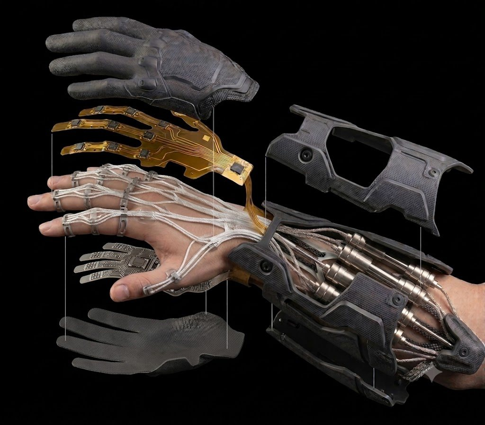
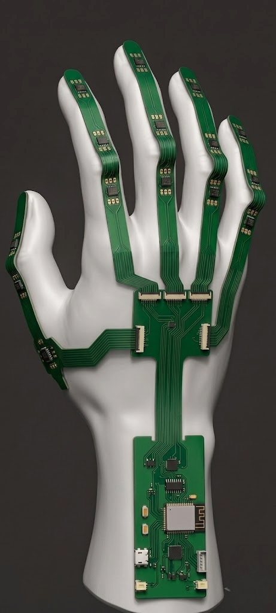

A glove that gives robots a human hand.Egy kesztyű, amely emberi kezet ad a robotoknak.
REACH captures the full motion of the human hand and transfers that skill to industrial robots and humanoid hands — so a person can guide and teach a robot simply by moving their own hand.A REACH rögzíti az emberi kéz teljes mozgását, és ezt a tudást átülteti ipari robotokba és humanoid kezekbe — így egy ember pusztán a saját kezének mozgatásával irányíthat és taníthat egy robotot.
Industrial robots are brilliant at repetition but struggle with anything unpredictable, and they're slow and costly to teach. REACH lets a human operator drive and train them directly, with the dexterity of a real hand — even on a metal-heavy factory floor.Az ipari robotok kiválóak az ismétlésben, de nehezen birkóznak meg a kiszámíthatatlannal, betanításuk pedig lassú és költséges. A REACH-csel egy ember közvetlenül irányíthatja és taníthatja őket, egy valódi kéz ügyességével — még fémben gazdag gyártócsarnokban is.
It's a university innovation project, developed at Óbuda University within the Hungarian Startup University Programme (HSUP) — now a working prototype and a company in the making.Egyetemi innovációs projekt, amely az Óbudai Egyetemen, a Hungarian Startup University Programme (HSUP) keretében fejlődik — mára működő prototípus és egy születőben lévő vállalkozás.
Works where other gloves fail.Ott működik, ahol a többi kesztyű csődöt mond.
Most motion-capture gloves break down on a real factory floor — full of metal, magnetic fields and tight spaces. REACH is built for exactly that environment.A legtöbb mozgásrögzítő kesztyű felmondja a szolgálatot egy valódi gyártócsarnokban — tele fémmel, mágneses terekkel és szűk helyekkel. A REACH pontosan ehhez a környezethez készült.
- Magnetic immunity by design. Heading is reconstructed from the anatomy of the hand itself, so the glove keeps working right next to metal machinery — an intentional design choice, not a workaround.Mágneses immunitás tervezésből. Az irány a kéz saját anatómiájából áll össze, így a kesztyű fémgépek mellett is működik — ez szándékos tervezési döntés, nem kényszermegoldás.
- Full-hand resolution. Every joint of the hand is captured — all 23 degrees of freedom.Teljes kézfelbontás. A kéz minden ízülete rögzül — mind a 23 szabadsági fok.
- Portable and factory-ready. Flexible, wearable, and free to move around the floor — not tethered to a camera rig.Hordozható és üzemkész. Rugalmas, viselhető, és szabadon mozogsz vele a csarnokban — nem köt kamerás állványhoz.
From layers to a living handRétegekből élő kéz
An outer protective glove, a flexible sensor layer that follows every joint, and the electronics and structure underneath — engineered to fit and move like a second skin.Egy külső védőkesztyű, egy rugalmas érzékelőréteg, amely minden ízületet követ, alatta pedig az elektronika és a vázszerkezet — úgy tervezve, hogy második bőrként simuljon és mozogjon.
The hand is treated as a connected kinematic chain — the same way a roboticist models a robot arm — feeding a fusion engine that rebuilds the pose in real time: Sense → Fuse → Digital twin → Act.A kezet összefüggő kinematikai láncként kezeljük — ahogy egy robotmérnök modellez egy robotkart —, amely egy fúziós motort táplál, és valós időben építi újra a kéz pózát: Érzékelés → Fúzió → Digitális iker → Cselekvés.
Force feedback — letting the operator feel what the robot touches — is on the roadmap, not yet a shipped feature.Az erővisszacsatolás — hogy a kezelő érezze, amit a robot megérint — a tervek között szerepel, még nem kész funkció.

Sensing every jointMinden ízület érzékelése
A flexible printed-circuit network runs the length of each finger, with motion sensors at every segment and a controller at the wrist — capturing the hand without cameras or magnets.Rugalmas nyomtatott áramköri hálózat fut végig minden ujjon, minden ujjpercnél mozgásérzékelővel és a csuklónál egy vezérlővel — kamera és mágnes nélkül rögzítve a kezet.

The build, up close.Közelről a megépített eszköz.
Concept renders and prototype hardware.Koncepció-renderek és prototípus-hardver.
Frequently asked questions.Gyakran ismételt kérdések.
Didn't find your answer? Get in touch.Nem találtad a választ? Írj nekünk.
What exactly is REACH?Mi is pontosan a REACH?
A wearable data glove that records the full motion of your hand and uses it to control or train robots and humanoid hands — bringing human dexterity to machines.Egy viselhető adatkesztyű, amely rögzíti a kezed teljes mozgását, és ezzel robotokat vagy humanoid kezeket irányít vagy tanít be — emberi ügyességet adva a gépeknek.
How is it different from other motion-capture gloves?Miben különbözik a többi mozgásrögzítő kesztyűtől?
It keeps working in metal-heavy, magnetically noisy environments where most gloves drift or fail, it captures every joint of the hand (23 degrees of freedom), and it's portable rather than tied to a camera setup.Fémben gazdag, mágnesesen zajos környezetben is működik, ahol a legtöbb kesztyű elcsúszik vagy leáll; a kéz minden ízületét rögzíti (23 szabadsági fok); és hordozható, nem köti kamerás rendszerhez.
What stage is the project at?Milyen fázisban van a projekt?
Early stage. We have a working proof-of-concept, published research, a full hardware design and a digital twin in development. It is not a commercial product yet.Korai fázis. Van működő proof-of-conceptünk, publikált kutatásunk, teljes hardvertervünk és fejlesztés alatt álló digitális ikrünk. Még nem kereskedelmi termék.
Can I buy one or run a pilot?Megvásárolható, vagy lehet pilotot indítani?
Not off the shelf yet — but if you run a manufacturing or robotics operation and a pilot sounds interesting, reach out. Early conversations are exactly what we're after.Polcról még nem — de ha gyártással vagy robotikával foglalkozol, és érdekel egy pilot, keress minket. Pont a korai beszélgetéseket keressük.
Does it give force feedback?Van benne erővisszacsatolás?
Letting the operator feel what the robot touches is on our roadmap. Today the focus is precise, reliable hand-motion capture.Hogy a kezelő érezze, amit a robot megérint, a terveink között szerepel. Ma a pontos, megbízható kézmozgás-rögzítésre koncentrálunk.
Who is behind REACH?Kik állnak a REACH mögött?
A student-founded team at Óbuda University, developed within the Hungarian Startup University Programme (HSUP) and mentored by experienced engineers.Egy hallgatók alapította csapat az Óbudai Egyetemen, a Hungarian Startup University Programme (HSUP) keretében, tapasztalt mérnökök mentorálásával.
Help us put a human hand on every robot.Segíts emberi kezet adni minden robotnak.
We're a small student-founded team building real hardware with a clear path to market. If turning hand motion into robot skill sounds like your kind of problem, talk to us.Kis, hallgatók alapította csapat vagyunk, valódi hardvert építünk, világos piacra lépési úttal. Ha a kézmozgás robottudássá alakítása a te problémád, beszéljünk.
Software LeadSzoftvervezető
Own the software that turns sensor data into a precise, real-time model of the hand. If you think of the human hand as a serial kinematic chain — a robotics state-estimation problem — you'll feel at home here.Tiéd a szoftver, amely az érzékelők adataiból pontos, valós idejű kézmodellt épít. Ha az emberi kézre soros kinematikai láncként tekintesz — egy robotikai állapotbecslési feladatként —, itt otthon érzed magad.
- Sensor fusion & state estimation (Kalman filtering)Szenzorfúzió és állapotbecslés (Kalman-szűrés)
- Python today, C++ / Eigen on the roadmapMa Python, a tervekben C++ / Eigen
- Robotics, motion capture or embedded background a plusRobotika, mozgásrögzítés vagy beágyazott háttér előny
Prefer email? Write to reach.infrastructure@gmail.com with your CV.Inkább e-mail? Írj a reach.infrastructure@gmail.com címre az önéletrajzoddal.
Not this role? We're always glad to meet people excited about robotics, sensing and hardware. Get in touch and tell us what you'd want to build.Nem ez a pozíció? Mindig szívesen találkozunk olyanokkal, akiket érdekel a robotika, az érzékelés és a hardver. Írj nekünk, és meséld el, mit építenél.
Let's talk.Beszéljünk.
Questions, pilot ideas, partnerships or just curious — we'd love to hear from you.Kérdés, pilot-ötlet, együttműködés vagy csak kíváncsiság — örülünk, ha jelentkezel.
Email us directlyÍrj nekünk közvetlenül
reach.infrastructure@gmail.com
Based at Óbuda University, Budapest · Hungarian Startup University Programme.Óbudai Egyetem, Budapest · Hungarian Startup University Programme.